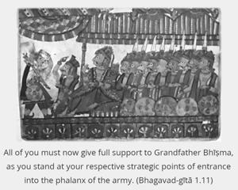
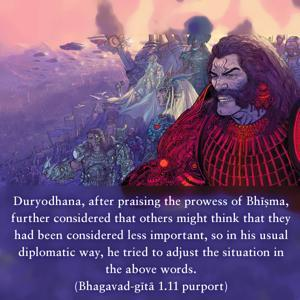
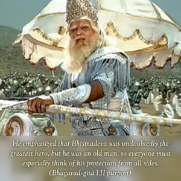
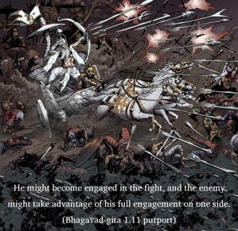
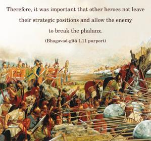
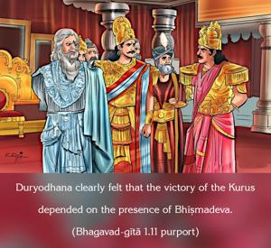

All of you must now give full support to Grandfather Bhīṣma, as you stand at your respective strategic points of entrance into the phalanx of the army.






Duryodhana, after praising the prowess of Bhīṣma, further considered that others might think that they had been considered less important, so in his usual diplomatic way, he tried to adjust the situation in the above words. He emphasized that Bhīṣmadeva was undoubtedly the greatest hero, but he was an old man, so everyone must especially think of his protection from all sides. He might become engaged in the fight, and the enemy might take advantage of his full engagement on one side. Therefore, it was important that other heroes not leave their strategic positions and allow the enemy to break the phalanx. Duryodhana clearly felt that the victory of the Kurus depended on the presence of Bhīṣmadeva. He was confident of the full support of Bhīṣmadeva and Droṇācārya in the battle because he well knew that they did not even speak a word when Arjuna’s wife Draupadī, in her helpless condition, had appealed to them for justice while she was being forced to appear naked in the presence of all the great generals in the assembly. Although he knew that the two generals had some sort of affection for the Pāṇḍavas, he hoped that these generals would now completely give it up, as they had done during the gambling performances.